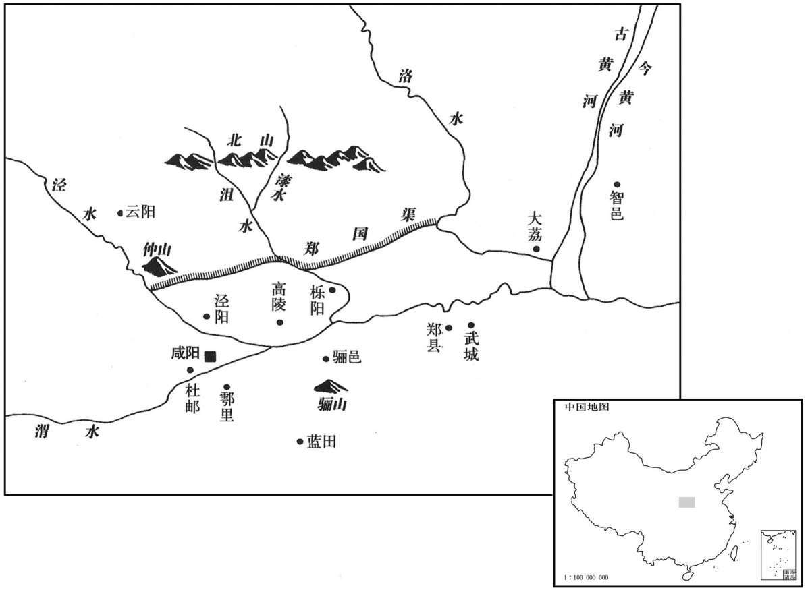

公元前246年资治通鉴：本年记事、原文与白话对照
按原书编年位置阅读；追叙和史论不等于本年发生的事件。白话采用所据译本，缺译不以生成译文补齐。
卷6 · 本年记事
公元前246年 · 始皇帝在位第1年
元年〔（乙卯、前二四六）〕
本年事件索引（现代整理）

本年形势与背景参考图
蒙骜击定之。〔击定晋阳也。骜，五到翻。〕
秦国大将蒙骜率军平定了晋阳的叛乱。
韩欲疲秦人，使无东伐，乃使水工郑国为间于秦，凿泾水自仲山为渠，〔间，古苋翻。班志：泾水出安定郡泾阳县西开头山，东至冯翊阳陵县入渭，过郡三，行千六十里。淮南子曰：泾水出薄落之山。华戎对境图：泾水上接蔚茹水，南流至笄头山，西折而东流，迳原州、泾州界，又东流迳邠州、干州之北，又东南流至雍州泾阳县而合于渭。师古曰：仲山，即今九嵕之东仲山也。开，轻烟翻。蔚，纡勿翻。笄，古兮翻。雍，于用翻，嵕祖红翻。〕并北山，东注洛。〔并，步浪翻。师古曰：洛水，即冯翊漆、沮水。程大昌曰：禹贡止有漆、沮，秦、汉以来始有洛水。所谓洛者，班志云：源出北地归德县北蛮夷中。今按其水自入塞后，历鄜、坊、同三州始入渭，孔安国谓自冯翊怀德县入渭是也。汉怀德、唐同州朝邑县是也。漆水自华原县东北同官县界来，沮水自邠州东北来．洛在漆、沮之东，至同州白水县与漆、沮合。所谓洛即漆、沮者，言其本同也。沮，七余翻。鄜，音肤。邠，彼巾翻。〕中作而觉，〔师古曰：中作，谓用功中道，事未竟也。觉，露也，韩之谋露也。〕秦人欲杀之。郑国曰：“臣为韩延数年之命，然渠成，亦秦万世之利也。”乃使卒为之。〔臣为，于伪翻。卒，子恤翻，终也。〕注填阏之水溉舄卤之地四万余顷，收皆亩一钟，〔师古曰：注，引也。填阏，谓壅泥也。言引淤浊之水灌咸卤之田，更令肥美，故一亩之收至六斛四斗。杜佑曰：古者百步为亩，秦、汉以降，即二百四十步为亩。阏，读曰淤，音于据翻。舄，与舄同，音思积翻，卤也。卤，亦作卤，音郎古翻，咸卤。〕关中由是益富饶。〔饶，有余裕也。〕
韩国想要消耗秦国国力，使它不发兵东征，便派遣水利家郑国赴秦，游说秦国兴修水利，从仲山起，开凿一条引泾水、沿北山东注洛河的灌溉渠。工程进行中，秦王觉察到了韩国的意图，为此要杀郑国。郑国说：“我确是为韩国延长了几年的寿命，但是这条灌溉渠如果修成了，秦国也可享万世之利啊。”秦王于是命他继续主持施工，完成了此项工程。这条水渠引淤浊而有肥效的水灌溉盐碱地四万多顷，每亩的收成都高达六斛四斗，秦国的关中一带因此更加富裕起来。